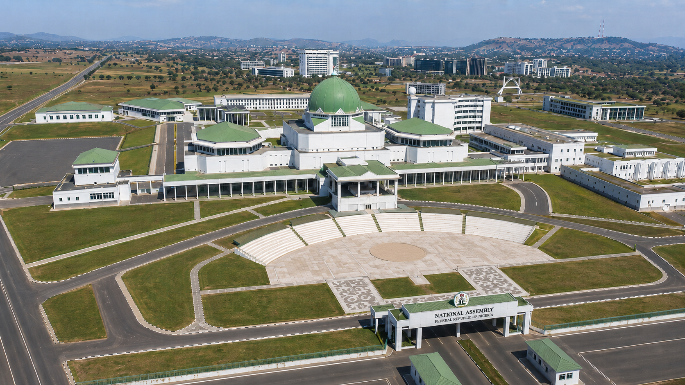
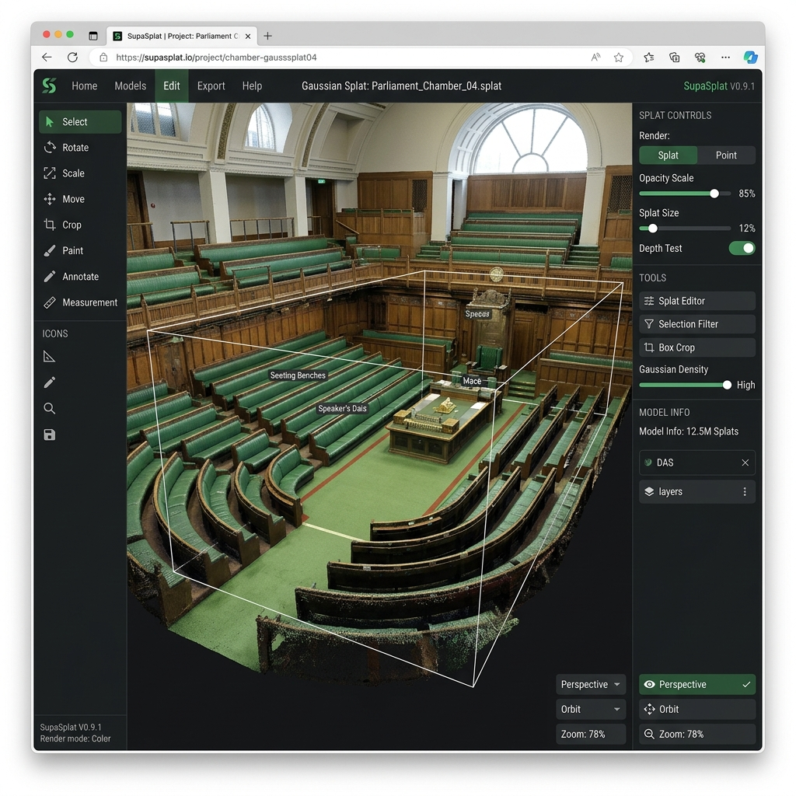

Creating photorealistic 3D chambers for Comparative Public Administration using rapid 3D Gaussian Splatting and WebGL runtimes
Gathered multiple high-resolution photos representing distinct angles of the National Assembly Complex (NASS) in Abuja, Nigeria.
Acquired clear shots of the front facade, surrounding dome, side structures, and top-down layout.
Captures precise color balance (the signature green carpet and mahogany woodwork) for realism.

Inputting static NASS reference views into Higgsfield to generate a continuous, smooth camera flythrough video.
Upload Front, Sides, and Top view images to map spatial keypoints.
Stitch views into a single, cohesive 1080p camera pan movie.
Export MP4 footage optimized for Gaussian Splat feature matching.
Higgsfield AI: Synthesizing 3D space from 2D image anchors
Processing the stitched flythrough video to construct the high-fidelity 3D Gaussian Splat (.ply file) of the chamber.
Epic RealityScan parses video frames to calculate high-density surface point locations.
Retains the complex wood paneling reflection and glass dome transparencies naturally.

Using the open-source SupaSplat WebGL editor to trim unnecessary background data and adjust the chamber scale.
Crop out extra skybox splats to keep the file size low.
Reduce count in non-essential areas to reach a target weight of <15MB.
Save as a highly compressed .spz file for instant WebGL loading.
Mounting the optimized 3DGS chamber panorama as a web background inside the Next.js gameplay interface.
10 role-card placeholders overlay seamlessly on top of the 3DGS environment.
Supabase handles step confirmations and database variable updates in real-time.